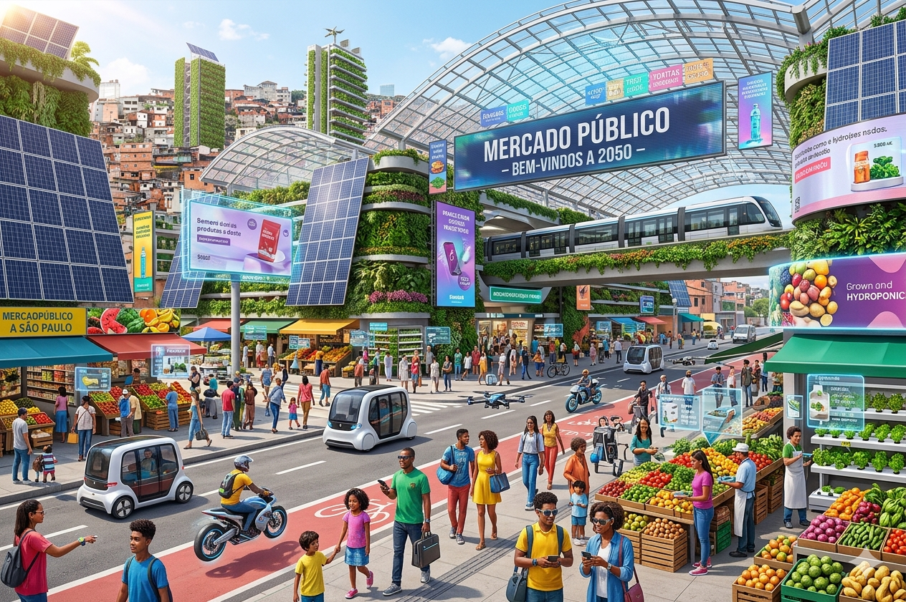

Mercado Public - Jardim Angela
Como é hoje: Um mercado, com um colegio próximo bem movimentado, com pontos de ônibus próximos e o mercado com vários pontos para comer, como lugar para restaurente, sushi, sorvete etc.
Como imagino em 2035: Um mercado com vários pontos turisticos, ônibus, metro e mais meios de locomoção se possível. Com o colegio próximo também possuindo bastante tecnologia

Ver no Google Maps